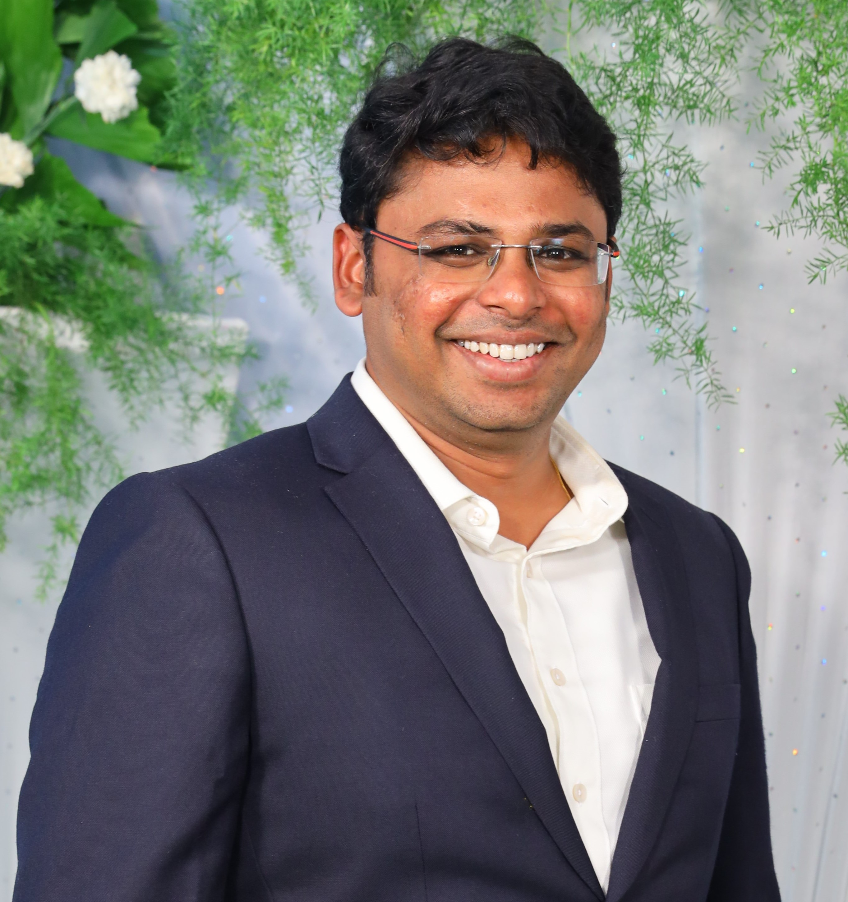

Yugandhar Arcot
Doctor of Philosophy in Mechanical Engineering(Ph.D)
Deakin University - Australia and IIT Madras - India
|  |
My expertise is in Advanced Manufactuting, Automotive plastic design using Catia V5, Injection Molding desing using Solid works,
Design of Biomedical devices, New product development (NPD), Research and Development (R&D).
I am currently working as Technical Support Engineer - Mechanical Design in Mechanical Engineering Domain at Skill-lync, India.
Please click here Linkedn profile is
My research work in Deakin University, Australia and Indian Insitute of Technology Madras, India is related to designing and
developing polymeric microfluidic devices for blood cells separation. I have used different fabrcation methods like 3D printing, Photo--Lithography,
Hot embossing and CNC Machining. The work is related to New product development (NPD), Advanced Manufacturing, Design of Medical devices.
Please click here for my research profile
.
I have a combined working experience of 8.5 years including PhD at Indian Institute of Technology (IIT Madras), Deakin University,
Cognizant Technology Solutions (CTS- Chennai and Coimbatore) and Skill-Lync (Chennai and Bangalore).
I am part of workshop conducted on Lean startup programs conducted by Gopalakrishna deshpande center at IIT Madras.
I am co-founder of a garment manufacturing startup which specializes in custom manufactuirng
I worked for Startups in Cold calling customers, target customer segmentation, workflow development,
communication with the customers, business model development.
For Contact information
Timeline
| Year |
Job/College |
Role/Degree |
Area/Subject |
| 2021 - Present |
Skill-Lync (Epowerx Learning Technologies Pvt Ltd |
Technical Support Engineer - Mechanical design |
Mechanical Engineering |
| 2021 - Present |
Arca Customised Manufacturing Solutions |
Co-Founder |
Garment Manufacturing |
| 2017 - 2022 |
Deakin University, Australia |
Doctor of Philosophy - PhD |
Mechanical Engineering |
| 2015 - 2022 |
Indian Institute of Technology Madras, IIT M, India |
Doctor of Philosophy - PhD |
Mechanical Engineering |
| 2012-2014 |
Osmania University |
Master of Engineering - M.E |
Tool and Die Design |
| 2009-2011 |
Cognizant Technology Solutions |
Programming Analyst |
Software testing |
| 2005-2009 |
Sri Venkateswara University, Tirupthi, India |
Bachelor of Technology- B.Tech |
Mechancial Engineering |
Executive profile
- Possess skills in offering new innovations and developments in designing and
fabricating micro-fluidic devices and other micron range devices.
- Gained international experience by working in Melbourne Centre of Nanofabrication (MCN),
Australia as a part of academic curriculum; attained training on all equipment used for electronic manufacturing.
- Familiar with process flow of Electronics and Industrial Automation Manufacturing companies
- COMSOL 5.3a for Fluid dynamics and particle flow simulations in microfluidic devices
- Expertise in Polymer Manufacturing and Electronic Manufacturing
- Capabilities in selection of the critical instrumentations, manufacturing devices & automation
assembly within product architecture to meet customer requirements
- Bagged Deakin India Research Initiative (DIRI) Scholarship Award in the year of 2017
Technical Skills
- CAD/Solid Modelling and Assembly: AutoCAD Creo/ProE, Unigraphics NX, and Comsol 5.3a.
- Manufacturing: Polymer Manufacturing (Tool and Die Design), Electronics Manufacturing (Clean Room Facility),
Sheet Metal Manufacturing (Die Designing), Micro and Nano Manufacturing, Geometric Dimensioning & Tolerancing (GD &T)
- Programming Skills: Python 3.7 Programming, MS-Office, Software Testing- Manual, Intermediate Statistical Skills and Data Analysis
- Writing: Technical writing, Project proposal development, Scientific articles
| Creo ProE |
⭐⭐⭐⭐⭐ |
| Catia V5 |
⭐⭐⭐⭐⭐ |
| Solid Works |
⭐⭐⭐⭐⭐ |
| Unigraphics |
⭐⭐⭐⭐ |
| Comsol 5.3a |
⭐⭐⭐ |
| Polymer Manufacturing (Tool and Die Design) |
⭐⭐⭐⭐ |
| Electronics Manufacturing (Clean Room Facility) |
⭐⭐⭐⭐ |
| Micro and Nano Manufacturing |
⭐⭐⭐⭐⭐ |
| Geometric Dimensioning & Tolerancing (GD &T) |
⭐⭐⭐⭐⭐ |
| Technical writing |
⭐⭐⭐⭐⭐ |
| Project proposal development |
⭐⭐⭐⭐⭐ |
Certifications
WORKING EXPERIENCE (8.5 YEARS - listed below)
- 1.5years: Technical Support Engineer - Mechanical Design in Skill-Lync.com
- 5.5years: PhD Scholar - Research and Development of fabrication techniques
for mass fabrication of micro sized components using MEMS facilities. (CTC: Stipend 4,20,000 INR/Annum)
- 1.5 years: Software manual testing in Cognizant Technology Solutions. (CTC: 3,00,500 INR/Annum)
- Research and Development Experience at IIT Madras: (2015-2020)
- Design and development of Microfluidic devices using CFD techniques for particle separation using inertial focusing
- Manufacturing process development of Microfluidic devices using Electronic
manufacturing techniques (MEMS facilities) at Australian Nano-fabrication Facility (Clean room 100 &1000) - Published in International Journal
- Manufacturing protocol development for Micro-milling Polymeric substrates at IIT Madras, India
- Surface roughness as criteria for Quality Control on Polymeric Surfaces.
- Professional Experience at CTS: (2009-2011)
- 2009-2011 with Cognizant Technology Solutions, Chennai/Coimbatore as Programming Analyst
Manual and Automation Testing
Role: Developed Test Cases including Manual and Automation Scripts. Worked on projects of various
lengths and complexity, and achieved proficiency in exhaustive manual and automation testing; consistently delivered high quality of work
Key Projects:
- Pre-User Acceptance Testing in DnBi of Cognizant Technology Solutions
- User Acceptance Testing, Compatibility Testing of Research Map functionality in Lexis-Nexis project of Cognizant Technology Solutions
- Freelance Experience
- 2012: Cnerg Global Tools, as Freelancer - Solid Modeling (Tricone Bit Designing and Assembly)
- Part-Time Assignments
- 2020: Lvlaplpha, Startup- Defense technology, Pune, Internship for developing and manufacturing isolation chambers
- 2019: Teakwood Technologies, Startup- Biomedical, IITM, R&D for developing nanoparticle coatings
- 2018: Tan90 Thermal Solutions, Startup- Cold chain solutions IITM, as freelancer for Business development.
Role: Identified and developed new business through networking, follow-up calls and cold-calling to create interest in products and services,
generated new business leads and arranged meetings. Handled 3D modeling of parts and Manufacturing of the parts.
PUBLICATIONS
- Y.Arcot, G.L.Samuel, Lingxue kong, “A Novel method of Fabricating Nickel Stamp for
Micro Hot-Embossing of Serpentine Microfluidic Channels on Polymethylmethacrylate”,
Int. J. Precision Technology, Vol. 8, Nos. 2/3/4, 2019Click here
- Y.Arcot, G.L.Samuel, Lingxue kong, “Manufacturability and Surface Characterisation of Polymeric Microfluidic Devices for Bio-medical Applications ”,
Int. J. Advanced Manufacturing Technology, Under Review , 2019Click here
- G.L.Samuel, Lingxue kong, Y. Arcot, Pavan Pandit “Principles of Advanced Manufacturing Technologies for Biomedical Devices”,
published in Advanced Micro- and Nano-manufacturing Technologies, Springer-Singapore href="https://www.springerprofessional.de/en/principles-of-advanced-manufacturing-technologies-for-biomedical/19721650">Click here
- Micro Hot-Embossing of Serpentine Channels on PMMA based Microfluidic devices-
International Conference on Precision, Meso, Micro and Nano Engineering – COPEN 10, 2017, IIT Madras, India Click here
ACADEMIC PROJECTS
- “Fabrication of polymeric microfluidic devices for blood cell separation” in IIT Madras and Deakin University
- “Optimization and Effect of Process Parameters using Taguchi Method and ANOVA on ECAP Method for 120 degree
Channel Dies” in Osmania University, Hyderabad
- “Analysis of Work Material Flow Stress Constitutive Model for Simulation of Cutting Parameters”
in Sri Venkateswara University College of Engineering, Tirupathi
EXTRACURRICULAR ACTIVITIES
- Worked as joint secretary of department of Mechanical Engineering during B.Tech.
- Member of organizing committee of M’explore-2007 (a national level technical symposium conducted at S.V.U.C.E) and Talent’s Day-2007
- Participated in State Level Championship (A.P state school games federation 2001-02)
- Participated in “3rd All India Conference On Science And Spiritual Quest”
- Secured fourth prize in sports meet for Chittoor district secondary schools (1500mts)
- Won prizes at number of competitions at school level
- Youngest Boy of The Tournament which was conducted at Rayalaseema region at Chittoor in 1997-98
Other Interests
- 3d Printing, Custom manufacturing, Tool designing, Application Engineering, Design of Experiments and Simulation for Manufacturing systems,
Statistical control on Manufacturing systems, Plastic Recycling.
Personal details
Date of Birth: 7th April 1987
Languages Known: Telugu, English, Tamil, Hindi, Kannada
Current Address: 90,Lucky, Terracon residency,Kithaganahalli, Bommasandra - 560099
{kind=link}
{kind=link}
{kind=link}